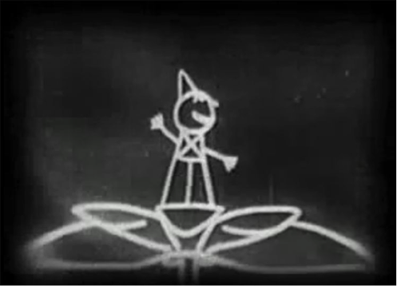
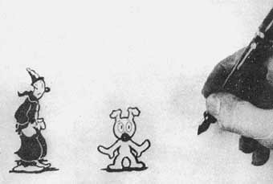
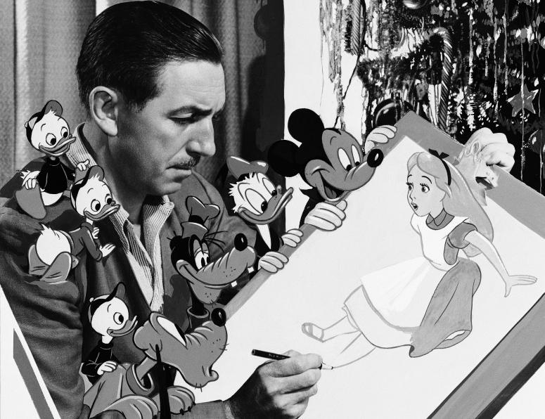

The Film Era of Animation
Overview
After the rise of mechanical methods as seen in the previous section, a number of technologies suddenly took hold in the hearts of the public in the interest of supporting and developing animation. This film era,
as it came to be aptly named, would forever change the course of history for animation, and even the now-developing practice of cinematography in general.
The Silent Age of Animation
The first film that was recorded on standard picture film and included animated sequences was the 1900 film, The Enchanted Drawing..[1] Produced by Thomas A. Edison and directed by and starring J. Stuart Blackton, the silent film depicts a cartoonist sketching an exaggerated portrait of an elderly gentleman. After completing the sketch, the artist rapidly draws a sketch of a bottle of wine and a goblet, and, to the surprise of all, actually removes them from the paper and pours wine out of the bottle into the glass. More surprising effects follow this, giving a clever example of stop motion animation and early visual effects found in films 
In 1908, the French artist Emile Cohl created the first film using what largely came to be known as traditional animation
—Fantasmagorie. Without much narrative structure, the 2-minute film largely consists of a stick figure moving about and encountering all manners of morphing objects, such as a wine bottle that suddenly transforms into a flower. Cohl borrowed many techniques from Blackton to achieve the effects shown. Fantasmagorie is considered by film historians to be the first animated cartoon.[2]
The 1910’s came with the rise of animated short films, or cartoons. Cartoons became an industry on their own, and cartoon shorts were produced for showing in movie theaters. During this time, the cel animation process was created by John Randolph Bray and Earl Hurd; it allowed for the selective duplication of parts of frames to be transferred to another frame, saving time and labor. This process became a keystone part of the animation industry for the rest of the decade.[3]
The Golden Age of Animation
By 1927-1928, audiences would groan when a cartoon came on. Animation had worn out its welcome. The novelty was gone. If sound hadn't come in, the cartoon would have vanished.”
— Shamus Culhane, on why Steamboat Willie was such an important film for animation
The Golden Age of Animation
is a period in animation history that began with the success of Steamboat Willie by Walt Disney Cartoons and included numerous animation studios’ rise to prominence (such as MGM and Warner Bros.). It began to fade out in the late 1950’s when theatrical animated shorts began to lose ground to the recently popularized medium of television animation.[4]
Many memorable and instantly recognizable characters emerged from this period, including Mickey Mouse, Bugs Bunny, Mr. Magoo, and Tom and Jerry, among others who haven’t survived along the way. Feature-length adaptations also began during this period, giving rise to classics such as Snow White and the Seven Dwarfs, Pinocchio, Fantasia, Dumbo, and Bambi.[5]
The Importance of Sound
Prior to 1928, animation was just a novelty; a very selective amount of theaters carried animated short films. Demand simply wasn’t high for them; Felix the Cat and Out of the Inkwell were the only series of prominence during this period, and even they were starting to lose popular interest by the end of the twenties. However, expanding technologies for animation started to increase the quality of cartoons during this time period.
In 1924, the creator of the Inkwell series, Max Fleischer, was experimenting with the incorporation of sound through his groundbreaking animation series Song Cartunes. The audio was unreliable; there was no way of synchronizing the animations with the sound (synchronized sound wasn’t developed until 1926), but it is believed by film historians to be the first sound animation. This idea of incorporating audio into cartoons slowly spread throughout the industry, and eventually became to be a staple of animation in the long run.
Early cartoons were very musically oriented. As animation was a very expensive process, cartoons were simply drawn, and in order to remain profitable, studios rushed the production of cartoons to release them as quickly as possible. Using public domain music, songs were able to be quickly added and timed to the animation.
The Rise of Color
The concept of color animation had been around for a while as well—a very few amount of cartoons had been initially hand-colored in the past. It wasn’t until the release of the 1930 film The King of Jazz that the first cartoon to make use of the Technicolor process appeared. A few years later, Walt Disney Cartoons came out with its brightly colored Silly Symphonies series—however, many studios like Warner Bros. and Terrytoons would continue using standard black-and-white processes until many years later.
Walt Disney’s Impact
But, as stated by TVTropes.org, regardless of the rising quality of cartoons, they were still relegated to be merely filler material that played before the main attractions of feature length films
. Walt Disney set out to change that notion, and thus came Disney’s next groundbreaking step in animation—in 1934, Disney began work on the first feature-length animation motion picture: Snow White and the Seven Dwarfs. While such an idea was nothing new to foreign countries, this was the first one to have both sound and color, and had extremely good art quality for the time period. The film was an instant success, receiving critical acclaim from critics and audiences and was the most financially successful motion picture ever created.[6]
In Brief
- The
film era
of animation would forever change the course of history that cinematography was to take hold of. - The silent age of animation generated numerous techniques integral to the art of hand-drawn animation.
- Some of these same mechanics are found today in things like video editing, camera tricks, etc.
- The golden age of animation brought about much change in movies and animation:
- Sound was soon found to be integral to the development process, creating more realistic and atmospheric stories that appealed to watchers.
- Color did the same.
- The rise of Walt Disney as an animator changed the public’s opinion of animated sequences—they were now considered to be full-featured spectacles.